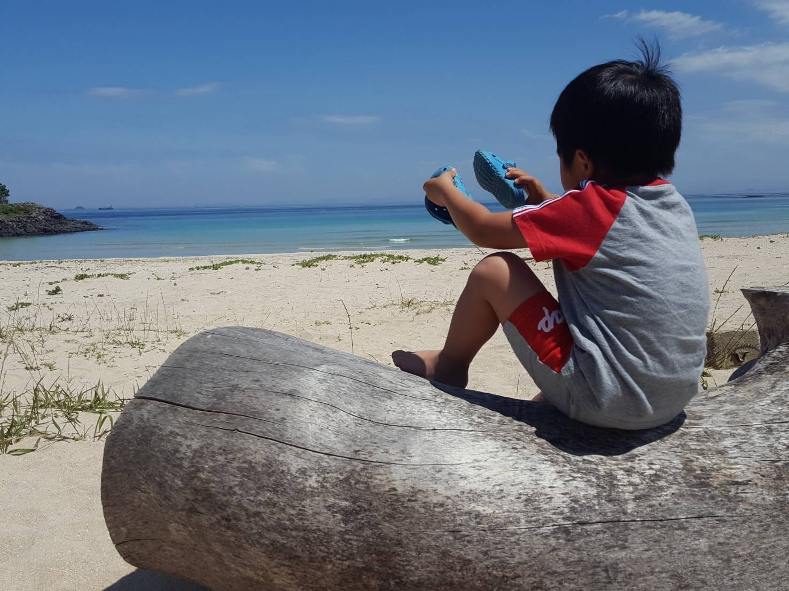

ようこそ壱岐へ！
壱岐商生がHP作ってみた!
私たちはLAMP講座でホームぺージの作り方を教えていただきました。今回学んだことを生かし、私たち壱岐商生の大好きなこの壱岐の島のことについてまとめてみました。
これを見ればあなたも壱岐についてもっと知りたくなるはず！！！
楽しみながら見ていただければ幸いです。 それではどうぞご覧ください
メニュー
| 松谷 | 郷土料理担当その他写真の準備 |
|---|---|
| 山本 | お土産担当その他トップページの画像は弟 |
| 大谷 | 郷土料理担当その他キャッチコピー、文章の手直し |
| 斉藤 | 神社担当その他写真撮影、キャッチコピー |
| 齊藤 | 方言担当その他動画撮影、編集 |
| 小栁 | お土産担当その他全体のレイアウト、デザイン |
| 市山 | 神社担当その他写真撮影、デザイン |
| 2021 | LAMP project ～壱岐商生がホームページ作りに挑んでみた～ |
|---|